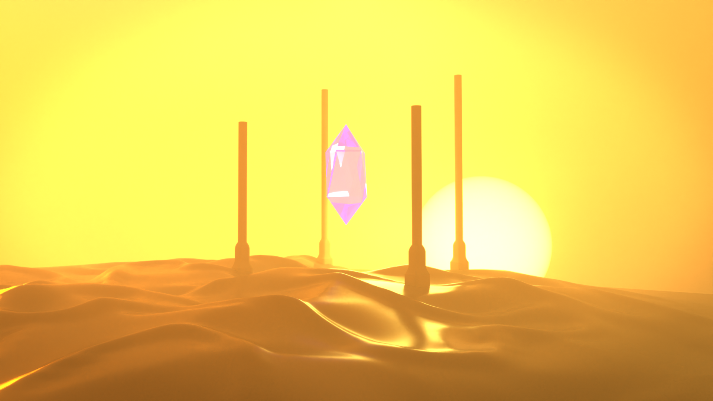
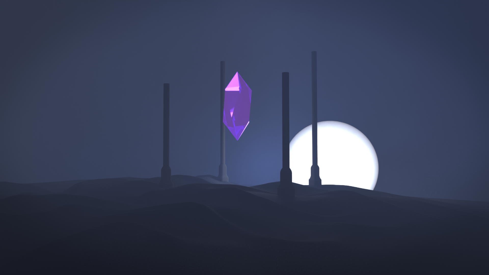
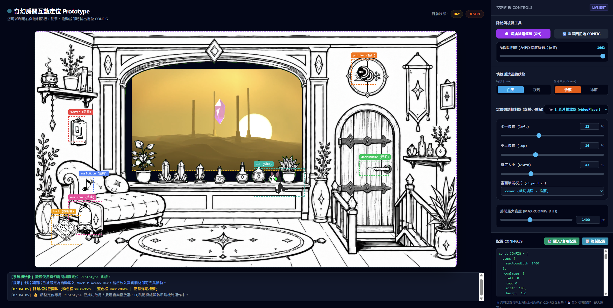

一個以霍爾移動城堡為靈感的互動網頁。
房間是黑白線稿，窗外是 Blender 做出的風景，這頁面將會拆解它怎麼被做出來。
比起做一個單純放影片的網頁，我想把 3D 模型和 2D 網頁的特性結合起來，做成一個可以互動的小介面。
一開始其實是想讓網頁能直接操作 3D 場景，像在 Blender 裡那樣轉視角、拿起東西。但這樣做手機會比較吃力，開發也比較複雜。
所以後來改成用 Blender 先做好的影片（mp4）加上繪製物件（png） 疊起來。畫面一樣會動、也能互動，但跑起來不那麼吃力，開發也不會過於複雜。
網頁靈感來自 霍爾的移動城堡，那種「轉一下門把，外面就換一個世界」的感覺。
我覺得這個概念很適合用 Blender 加上 PNG，做出場景切換的互動。
我把本地的 Claude 透過 MCP 接上 Blender，讓它能直接在 Blender 裡幫我這個新手操作。設定方式參考了旁邊這支教學影片。
老實說，現在的 Claude 還沒辦法一句指令就從零生出一個精緻完整的動畫。但如果我先在 BlenderKit、Sketchfab 找到不錯的現成模型，再請 Claude 進 Blender 幫我修改、加上動態，對初學者來說成果其實相當不錯。
場景是從 BlenderKit 下載的現成模型，本身是完全靜止的，因此需要增加一些會動的元素。另外因為在互動網頁上窗外只有一小片，動態要夠明顯才看得出來。
① 風沙：讓畫面飄一層薄霧，濃淡花紋隨時間慢慢往旁邊移，看起來就像有風吹過沙地。
② 水晶：中央的水晶緩緩上下漂浮並輕輕自轉，是畫面的視覺焦點。
③ 呼吸光：讓太陽和整體燈光的亮度一明一暗緩慢呼吸，像空氣在微微流動，營造魔法感。
同樣來自 BlenderKit 的靜態模型。沙漠是「乾、暖、飄」，冰雪要的是「冷、靜、落」，所以動態元素不太一樣。
① 雪：從上方緩緩飄落的雪花，落下時帶一點左右搖擺，比直直掉更自然。
② 魔法粒子：空中漂浮的藍紫色發光小點，原地小範圍亂飄，增加奇幻氛圍。
③ 水晶：和沙漠一樣，中央水晶漂浮、自轉，散發的光芒還會緩慢明暗呼吸，是畫面焦點。
兩個場景都有日版與夜版，但並不是重做兩次。加上從窗戶看出去的視角不變，所以用同一個模型、同一個機位，只換天空、換光球顏色、調冷暖，讓製作的時間成本減少。
天空顏色：白天是暖橘黃的黃昏天，夜晚換成深冷藍的夜空。
球體（太陽 / 月亮）顏色：畫面裡的光球，白天給它溫暖的橘陽色，夜晚換成冷冷的月光藍。整體燈光冷暖也一起跟著切換。


房間裡的小貓來自 Sketchfab。挑模型時認明「Animated」標籤，有動畫就代表骨架一定跟身體綁好了，而且自帶好幾組現成動作可以用。
想要「坐著搖尾巴 → 站起來 → 站著搖 → 坐下 → 重複」，其實就是把自帶的現成動作像剪影片一樣接起來，排在時間軸上首尾相連。接的時候注意前一段結尾的姿勢要和後一段開頭對得上，才不會「跳一下」。
① 自發光：貓要疊在時亮時暗的背景上，所以讓牠自己會發亮、不靠場景燈光，這樣不管白天黑夜亮度都一致。
② 透明背景：輸出時讓背景透明，貓才能乾淨地疊在房間地板上，看不到方框。
① 房間底圖：黑白線稿的房間，先用 AI 生成主圖，確立整體風格與構圖。
② 互動物件：再自己手繪那些可以點的物件 PNG，像燈開關、門把、音樂盒、書本等，讓它們能單獨疊在房間上、被點擊。
③ 疊層：由下而上一層層疊：窗外影片 → 房間圖 → 貓 → 可點的物件，組成完整畫面。
最費工的是「每個物件到底擺在哪」。與其一直改程式→重整→再改，不如先做一個調整用的測試頁（prototype）：上面放滑桿，可以即時拖動每個物件的位置、當場看效果，調滿意了再把數字複製回正式網頁。
這樣就不用盲改座標來回試無數次，省下大量時間。
